Cas d'utilisation⚓︎
Rappel
 UML permet de construire plusieurs modèles d’un système : certains montrent le système du point de vue des utilisateurs, d’autres montrent sa structure interne, d’autres encore en donnent une vision globale ou détaillée. Les modèles se complètent et peuvent être assemblés.
UML permet de construire plusieurs modèles d’un système : certains montrent le système du point de vue des utilisateurs, d’autres montrent sa structure interne, d’autres encore en donnent une vision globale ou détaillée. Les modèles se complètent et peuvent être assemblés.
Ils sont élaborés tout au long du cycle de vie du développement d’un système (depuis le recueil des besoins jusqu’à la phase de conception). Dans ce chapitre, nous allons étudier un des modèles , en l’occurrence le premier à construire : le diagramme de cas d’utilisation.
Il permet de recueillir, d’analyser et d’organiser les besoins. Avec lui débute l’étape d’analyse d’un système.
1.Notation de base⚓︎
1.1 Acteurs et useCase⚓︎
On va aborder ici un nouveau diagramme de la famille des diagrammes illustrant une vue statique du système.
Le diagramme de cas d'utilisation est un élément essentiel du langage UML qui permet de représenter graphiquement les interactions entre les acteurs externes et le système. Cet outil graphique permet de représenter de manière globale les fonctionnalités du système du point de vue des utilisateurs et des intervenants externes.
Intérêt du diagramme
- Permettent de délimiter les frontières du système
- Constituent un moyen d’exprimer les besoins d’un système
- Utilisés par les utilisateurs finaux pour exprimer leurs attentes et leurs besoins
- Permettent d’impliquer les utilisateurs dès les premiers stades du développement
- Constituent une base pour les tests fonctionnels
Les éléments de base d'un diagramme de cas d'utilisations (useCase) sont :
 Acteur : entité externe qui agit sur le système (opérateur, autre système...).
Acteur : entité externe qui agit sur le système (opérateur, autre système...).
L'acteur peut consulter ou modifier l'état du système.
 Use case : ensemble d'actions réalisées par le système, en réponse à une action d'un acteur.
Use case : ensemble d'actions réalisées par le système, en réponse à une action d'un acteur.
Convention graphique
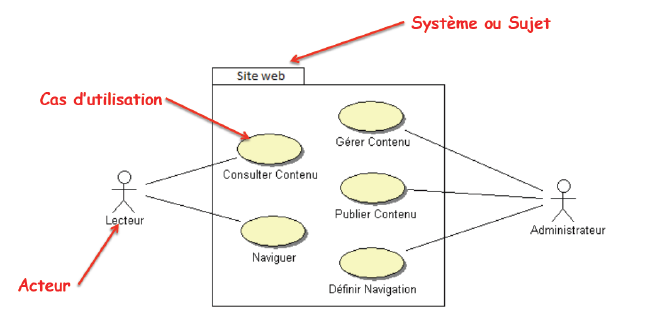
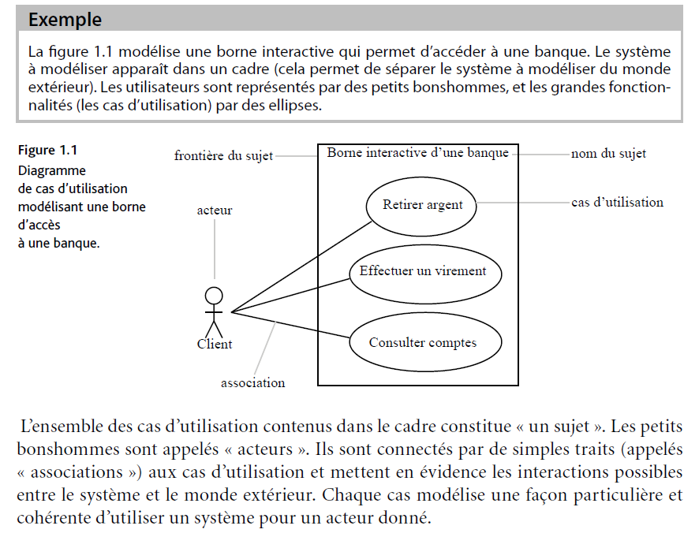
Exercice Vrai/Faux⚓︎
Compléter le tableau (Vrai ou Faux) :
| Analyse | Vrai ou Faux |
|---|---|
| Un acteur est forcément une personne humaine | |
| Une seule relation peut lier un acteur aux cas d'utilisation | |
| Un cas d'utilisation peut être en relation avec plusieurs acteurs | |
| Un cas d’utilisation peut être en relation avec un autre cas d’utilisation | |
| Un acteur peut être en relation avec un autre acteur. | |
| Une même personne peut être représentée par plusieurs acteurs. |
Correction
| Analyse | Vrai ou Faux |
|---|---|
| Un acteur est forcément une personne humaine |  |
| Une seule relation peut lier un acteur aux cas d'utilisation | |
| Un cas d'utilisation peut être en relation avec plusieurs acteurs |  |
| Un cas d’utilisation peut être en relation avec un autre cas d’utilisation | |
| Un acteur peut être en relation avec un autre acteur. | |
| Une même personne peut être représentée par plusieurs acteurs | |
2. Relations entre Acteurs⚓︎
La seule relation possible entre deux acteurs est la généralisation :
un acteur A est une généralisation d’un acteur B si l’acteur A peut être substitué par l’acteur B. Dans ce cas, tous les cas d’utilisation accessibles à A le sont aussi à B, mais l’inverse n’est pas vrai.
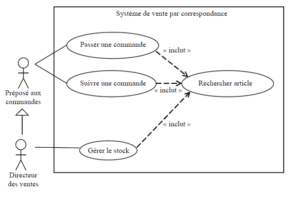
Exercice : Station Service⚓︎
 Le client se sert de l'essence de la façon suivante. Il prend un pistolet accroché à une pompe et appuie sur la gâchette pour prendre de l'essence. Qui est l'acteur du système ? Est-ce le client, le pistolet ou la gâchette ?
Le client se sert de l'essence de la façon suivante. Il prend un pistolet accroché à une pompe et appuie sur la gâchette pour prendre de l'essence. Qui est l'acteur du système ? Est-ce le client, le pistolet ou la gâchette ?
Correction
Le client est l’acteur du système. Le pistolet et la gâchette sont des ressources utilisées par le système.
 Le pompiste peut se servir de l'essence pour sa voiture. Est-ce un nouvel acteur ?
Le pompiste peut se servir de l'essence pour sa voiture. Est-ce un nouvel acteur ?
Correction
Si le pompiste accompli uniquement les tâches d’un client, il est inutile de créer un nouvel acteur. Il sera lui-même client.
 La station a un gérant qui utilise le système informatique pour des opérations de gestion. Est-ce un nouvel acteur ?
La station a un gérant qui utilise le système informatique pour des opérations de gestion. Est-ce un nouvel acteur ?
Correction
Oui, le gérant est un nouvel acteur.
 La station-service a un petit atelier d'entretien de véhicules dont s'occupe un mécanicien.
Le gérant est remplacé par un chef d 'atelier qui, en plus d'assurer la gestion, est aussi mécanicien. Comment modéliser cela ?
La station-service a un petit atelier d'entretien de véhicules dont s'occupe un mécanicien.
Le gérant est remplacé par un chef d 'atelier qui, en plus d'assurer la gestion, est aussi mécanicien. Comment modéliser cela ?
Correction
Un nouvel acteur, le chef d’atelier est créé à la place du gérant. Il hérite d’un autre acteur : le mécanicien.
 Quel est le défaut du diagramme suivant ?
Quel est le défaut du diagramme suivant ?
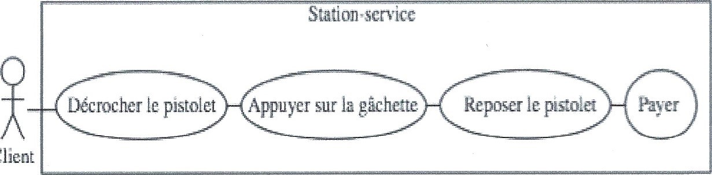
Correction
Il ne faut pas introduire de séquencement temporel entre les cas d’utilisation.
On peut faire apparaître Cette notion dans le scénario de la description détaillée du cas d’utilisation (voir ci après), mais pas dans le diagramme.
De plus, il est incorrect d’utiliser un trait plein pour relier deux cas d’utilisation. Cette notation est réservée entre acteur et cas d’utilisation. Les seules notations admises entre deux cas d’utilisation sont Include, extend ou héritage.
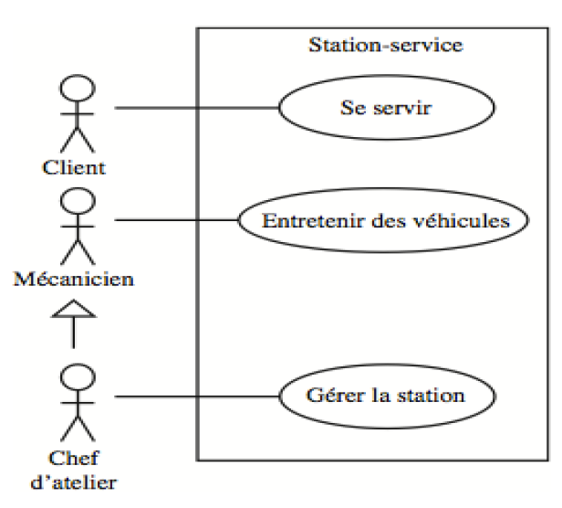
3. Relations entre cas d’utilisation⚓︎
3.1 Inclusion⚓︎
Relation d’utilisation : <<include>> : Le cas d’utilisation contient un autre cas d’utilisation
L'inclusion est une relation entre deux cas d'utilisation, où l'un inclut l'exécution de l'autre à un endroit spécifié. Elle est représentée par une flèche pointant vers le cas d'utilisation inclus avec la mention «include». L'inclusion est utilisée pour réutiliser un ensemble de comportements communs dans plusieurs cas d'utilisation sans dupliquer le même scénario dans chacun d'eux. Le cas d'utilisation inclus est généralement appelé "sous-cas d'utilisation".
Exemple :
Cas d'utilisation principal : "Acheter un produit en ligne"
Cas d'inclusion : "Sélectionner le mode de paiement"
Dans cet exemple, "Sélectionner le mode de paiement" est inclus dans le cas d'utilisation "Acheter un produit en ligne".
3.2 Extension⚓︎
Relation d’extension : <<extend>>: Le cas d’utilisation étend (précise) les objectifs (le comportement) d’un autre cas d’utilisation
L'extension est une relation entre deux cas d'utilisation, où l'un étend le comportement de l'autre à un point spécifié sans modifier le scénario de base. Elle est représentée par une flèche pointant vers le cas d'utilisation étendu avec la mention «extend». L'extension est utilisée pour modéliser des comportements optionnels ou conditionnels qui peuvent enrichir le scénario de base. Le cas d'utilisation étendu est généralement appelé "extension".
Exemple :
Cas d'utilisation principal : "Gérer un compte utilisateur"
Dans cet exemple, "Envoyer une notification par e-mail en cas de modification du compte" est une extension qui peut être activée en fonction de certaines conditions dans le cas d'utilisation principal "Gérer un compte utilisateur".
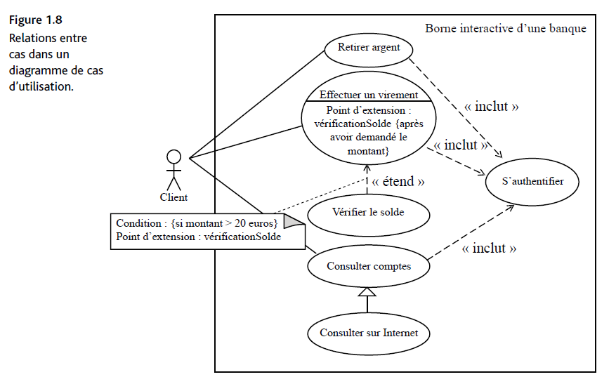
Le point d'extension : Un cas d’utilisation A étend un cas d’utilisation B lorsque le cas d’utilisation A peut être appelé au cours de l’exécution du cas d’utilisation de B. Le cas A dépend de B et la flèche va de A vers B.
Le point d’extension, c'est le point précis à partir duquel le scénario étendu peut être déclenché. Il porte un nom dans un compartiment du cas étendu.
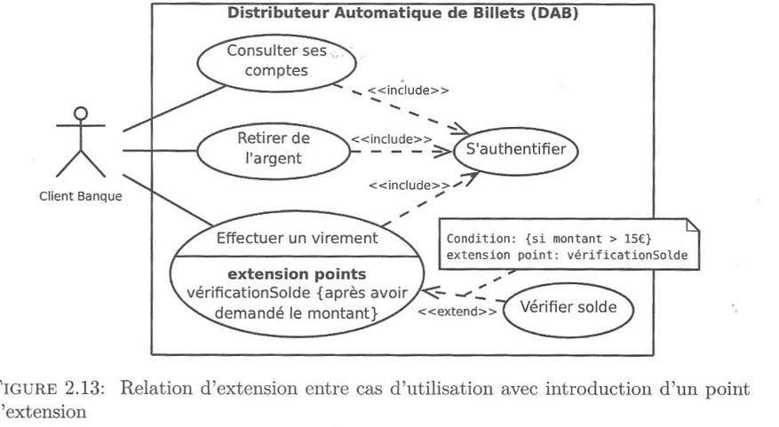
Exemple détaillé point d'extension Gérer une Réservation d'Hôtel
Voici un exemple pour illustrer la notion de point d'extension :
Cas d'Utilisation Principal : "Gérer une Réservation d'Hôtel"
Point d'Extension : "Appliquer un Rabais Spécial"
Scénario Principal :
L'utilisateur crée une réservation d'hôtel.
Le système calcule le coût standard de la réservation.
Point d'Extension : "Appliquer un Rabais Spécial"
Scénario d'Extension (si la condition est remplie) :
Si le client est un membre fidèle, le système applique un rabais spécial.
Le système recalcule le coût avec le rabais.
Suite du Scénario Principal : 3. Le client confirme la réservation.
Le système enregistre la réservation.
Dans cet exemple, "Appliquer un Rabais Spécial" est le point d'extension, et il indique l'endroit où le scénario d'extension peut être activé sous certaines conditions (par exemple, si le client est un membre fidèle).
3.3 Généralisation d'un UseCase⚓︎
La généralisation appliquée à un cas d'utilisation dans un diagramme de cas d'utilisation UML permet de modéliser une relation d'héritage entre des cas d'utilisation. Cela signifie qu'un cas d'utilisation spécifique, appelé cas d'utilisation enfant, hérite des propriétés et des comportements d'un cas d'utilisation plus général, appelé cas d'utilisation parent. le cas d'utilisation enfant est un cas particuler du cas d'utilisation parent.
exemple
Cas d'Utilisation Parent : "Gérer une Réservation de transport"
3.4 Exemple complet⚓︎
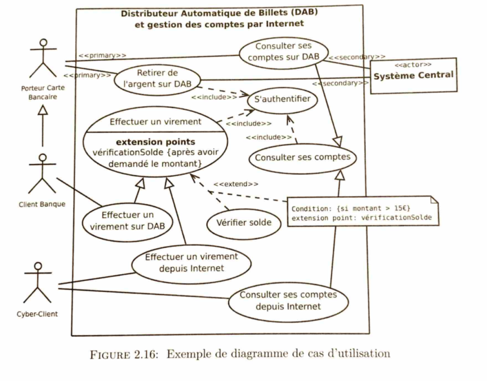
3.5 Exercices⚓︎
L'Agence de voyages⚓︎
Choisissez et dessinez les relations entre les cas suivants :
- Une agence de voyages organise des voyages où l'hébergement se fait en hôtel. Le client doit disposer d 'un taxi quand il arrive à la gare pour se rendre à l'hôtel.
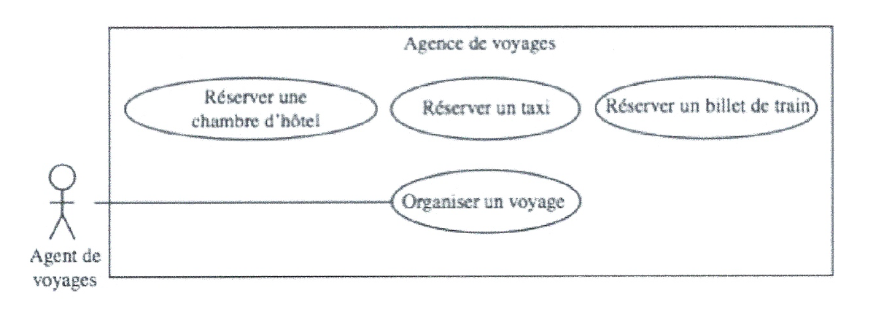
-
Certains clients demandent à l'agent de voyages d'établir une facture détaillée. Cela donne lieu à un nouveau cas d 'utilisation appelé « Etablir une facture détaillée ». Comment mettre ce cas en relation avec les cas existants ?
-
Le voyage se fait soit par avion, soit par train. Comment modéliser cela ?
correction
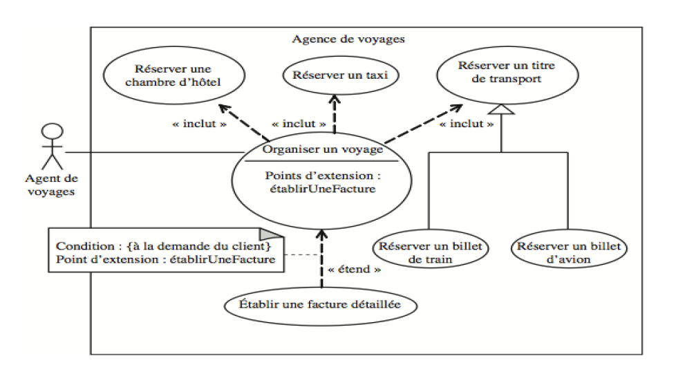
Réservation de salles et matériel⚓︎
Dans un établissement scolaire, on désire gérer la réservation des salles de cours ainsi que du matériel pédagogique (ordinateur portable ou/et tablette).
 Seuls les enseignants sont habilités à effectuer des réservations (sous réserve de disponibilité de la salle ou du matériel).
Seuls les enseignants sont habilités à effectuer des réservations (sous réserve de disponibilité de la salle ou du matériel).
Le planning des salles peut quant à lui être consulté par tout le monde (enseignants et étudiants).
Par contre, le récapitulatif horaire par enseignant (calculé à partir du planning des salles) ne peut être consulté que par les enseignants.
Enfin, il existe pour chaque formation un enseignant responsable qui seul peut éditer le récapitulatif horaire pour l’ensemble de la formation.
Correction
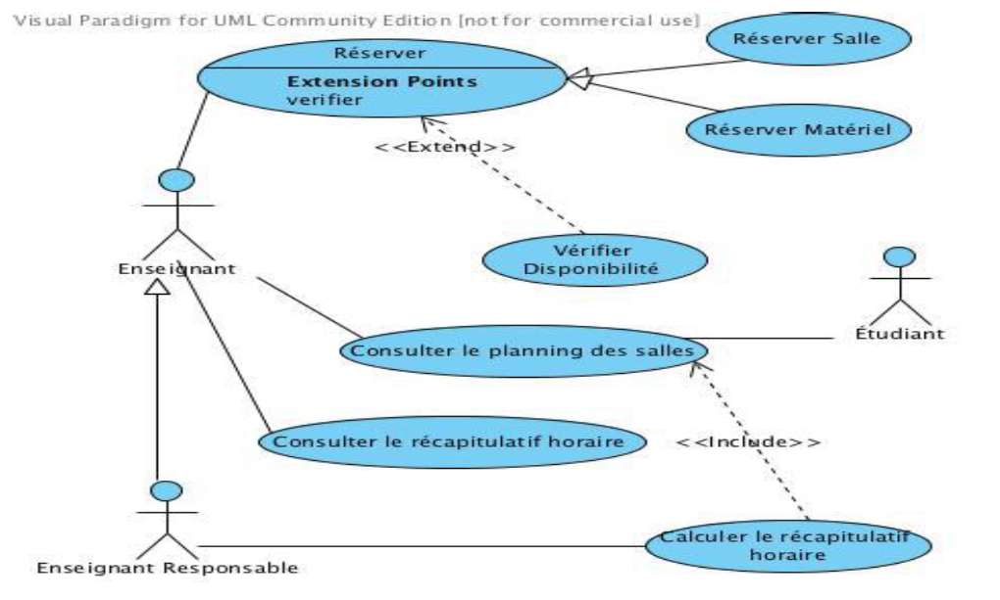
4. Cas d'utilisation détaillée⚓︎
Un diagramme de classe s'accompagne d'une description détaillée, qui permet d'enrichir les futurs cas de tests et de recettes.
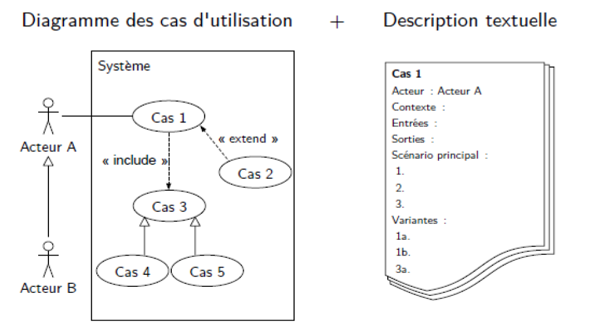
exemple :
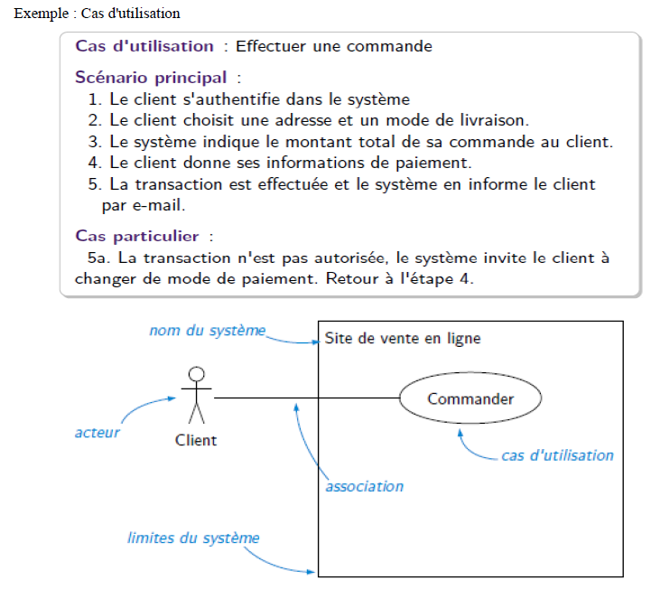 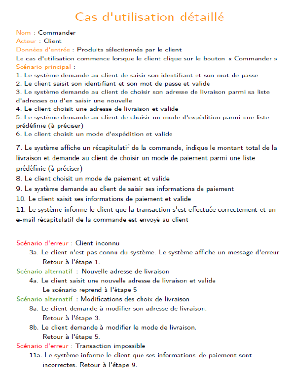